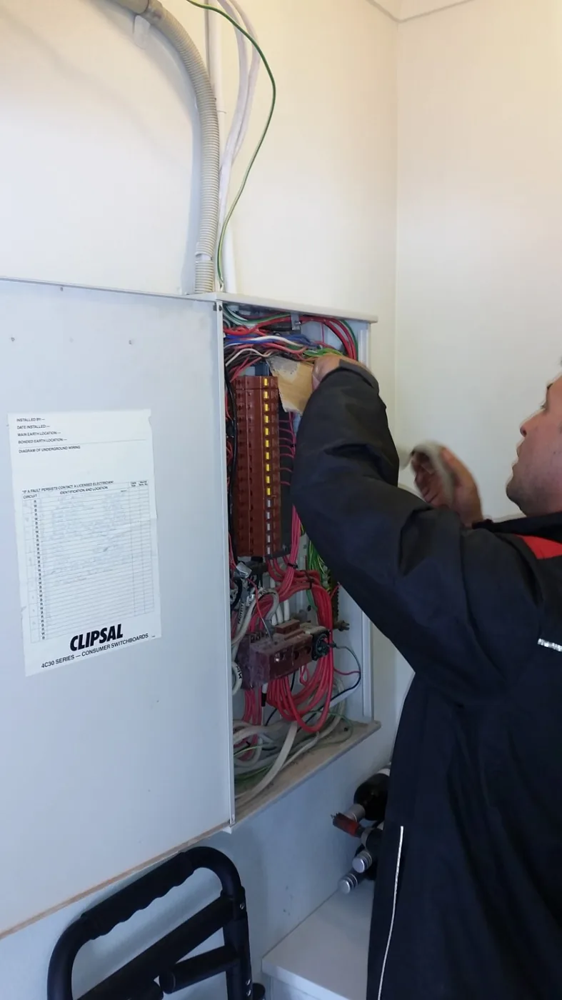
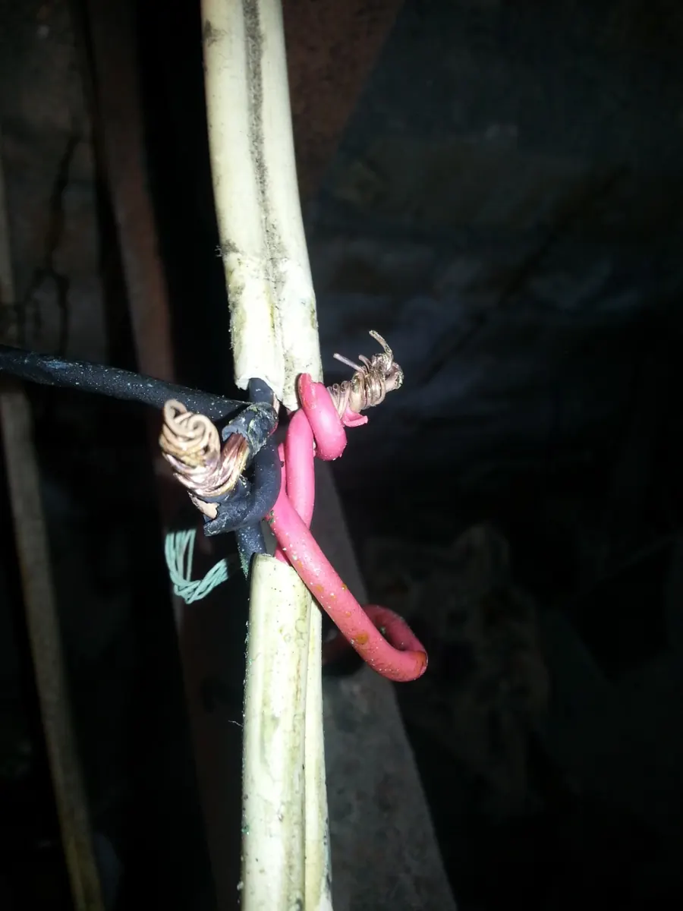
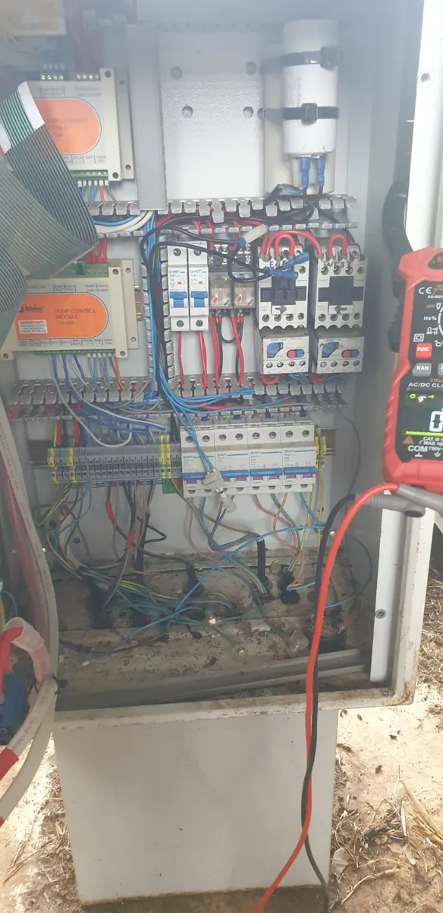

Electrical work, done properly.
Experienced electrical work for homes and businesses — from frustrating faults to switchboard upgrades, lighting, power, EV charging and commercial maintenance. Clear advice, careful workmanship and no runaround.

Is something wrong — or are you planning electrical work?
The right first step depends on whether you need a problem diagnosed or a planned job discussed.
Something is tripping, failing or not working.
Start with fault finding when the cause is unclear, power has failed or a protective device keeps operating.
Start with diagnosisPLANNED WORKI know what electrical work I need done.
Lighting, power, fans, switchboards, renovations, EV charging and other planned improvements can start with a job description and photos.
Request a quoteOne experienced electrician. A complete range of work.
Choose the job you need help with and go straight to the most relevant information.
Fault Finding & Electrical Repairs
Electrical faults can be obvious, intermittent or only appear under certain conditions. The aim is to diagnose the cause methodically, explain what was found and then recommend the most sensible repair.
Explore service02Switchboard Upgrades
Older switchboards can become crowded, difficult to understand or poorly suited to later additions. An upgrade should improve protection, organisation and the way the installation is managed.
Explore service03Residential Electrical
Repairs, additions and upgrades should be practical, neat and thought through before the first hole is drilled. Residential work ranges from one small fault to a broader renovation.
Explore service04Power, Lighting & Fans
From extra powerpoints and ceiling fans to LED upgrades and outdoor lighting, the design should make the property easier to use and easier to maintain.
Explore service05Commercial Electrical
Commercial electrical work often starts with a practical operational problem: equipment is down, a circuit is failing, lighting needs attention or a small upgrade has become urgent. The commercial pathway is designed around fast understanding and clear next steps.
Explore service06EV Charger Installation
A good EV charger installation considers the switchboard, available supply, cable route, protection, parking position and how the charger will be used before installation starts.
Explore service07Renovations & Electrical Upgrades
Renovation electrical work is easier when power, lighting, switching, appliance loads and the switchboard are considered together instead of one item at a time.
Explore serviceReal faults. Proper diagnosis.
These are genuine images from the Berryman Electrical work archive. They show why fault finding is about identifying the actual problem, not guessing and replacing parts.



Electrical problems are easier when the next step is clear.
Faults, maintenance, lighting, power and electrical changes for shops, cafés, strata, property managers, workshops and local businesses.
Based in Mullumbimby. Focused around Byron Bay.
The main service area generally sits within about a 30-minute normal drive of Byron Bay, with selected jobs slightly beyond that where practical.
Clear service coverage.
Rather than claiming the whole Northern Rivers indiscriminately, Berryman Electrical focuses on the areas it genuinely wants to serve heavily.
See service areasReal work from the archive.
These are genuine Berryman Electrical work photos. Full project case studies will be added as job details, location and outcomes are confirmed.

Older commercial switchboard
Large existing switchboard from the real work archive.

Commercial fault finding
Testing and diagnosis inside commercial control equipment.

Renovation electrical work
Electrical cabling exposed during renovation works.
Local electrician across Byron Bay and nearby Northern Rivers.
Berryman Electrical is based in Mullumbimby and heavily services Byron Bay and the surrounding towns. These are the main local pages on the site.
Also servicing nearby areas
Nearby localities are covered naturally through the major area pages rather than being turned into thin duplicate pages.
Useful answers before you book.
Short, practical explanations for common electrical questions — useful to people and clear enough for modern search systems to understand.
Why does my safety switch keep tripping?
What repeated trips can mean and what information helps with diagnosis.
Read guideWhen should a switchboard be upgraded?
Common signs an older or crowded switchboard deserves assessment.
Read guideWhat should be checked before installing an EV charger?
Switchboard, supply, cable route, protection and parking position.
Read guideTell us about the job.
Send the suburb, type of work, what is happening and photos if they help.
Prefer to call?
0424 157 002